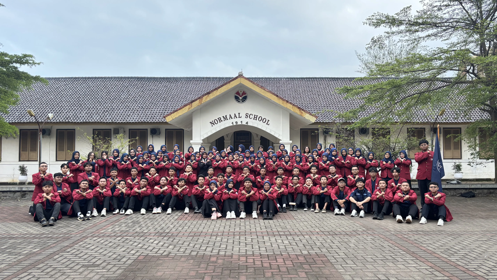
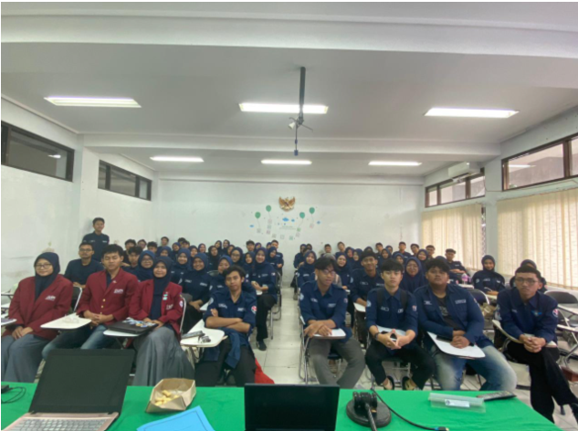
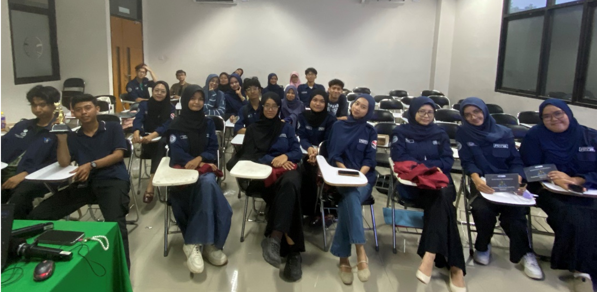
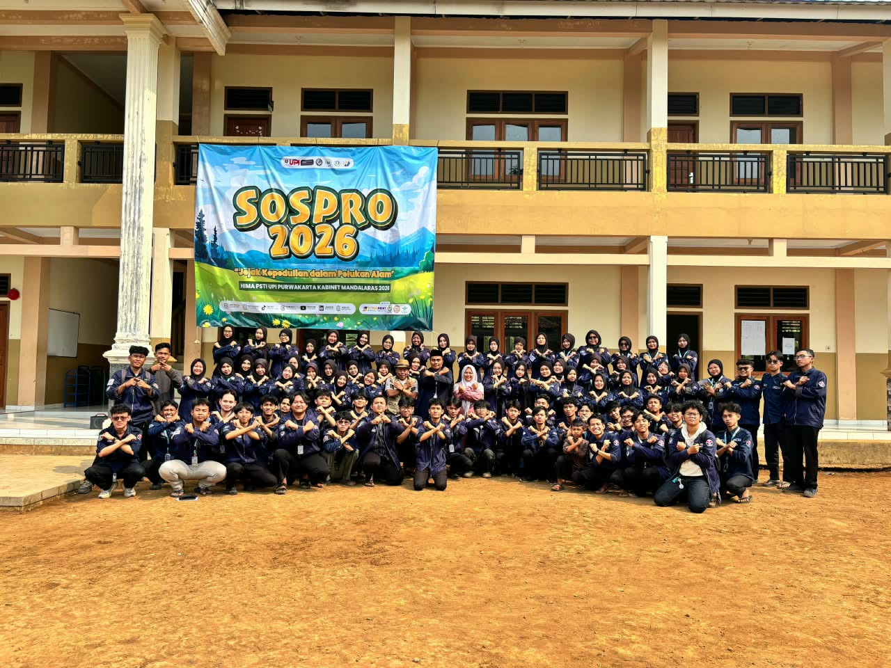
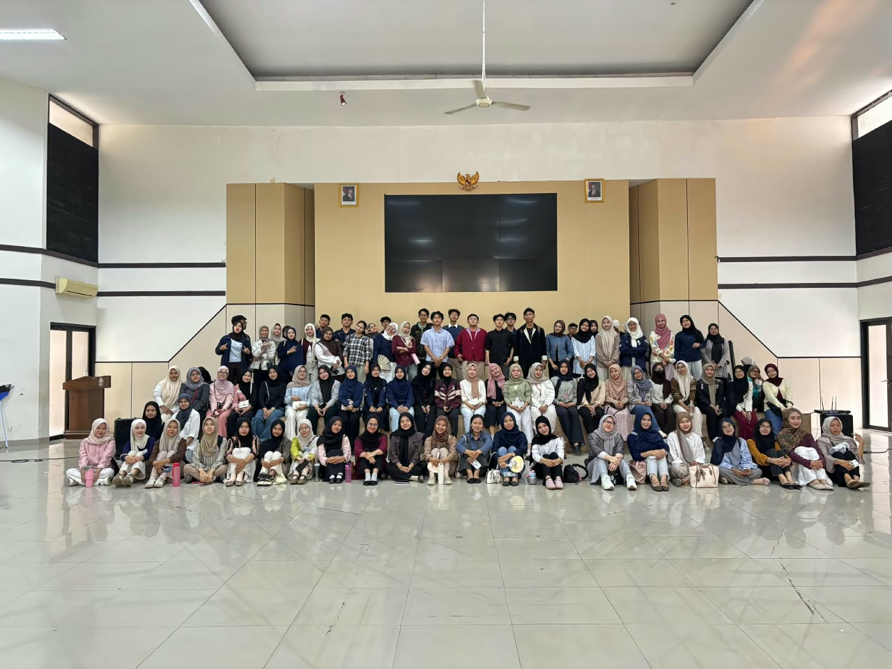
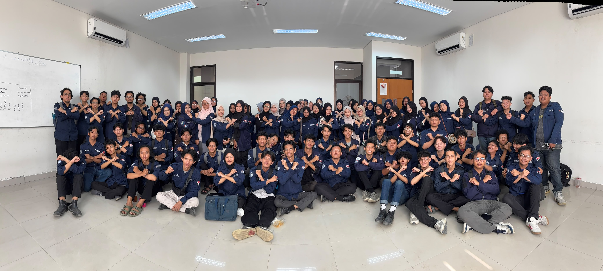
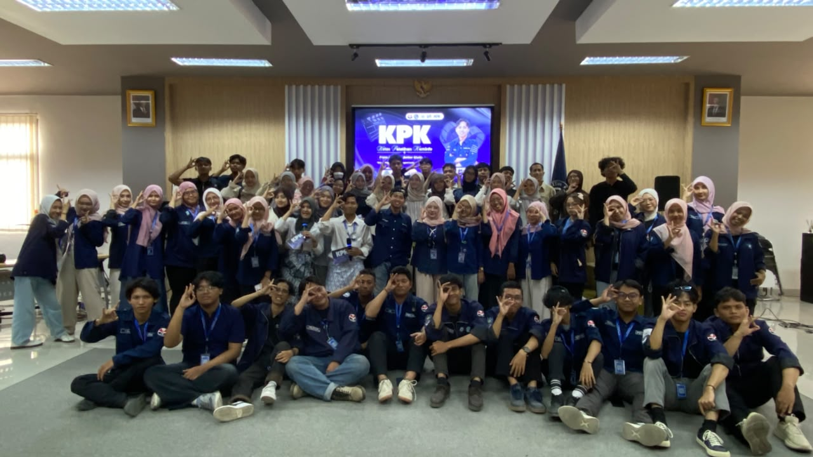
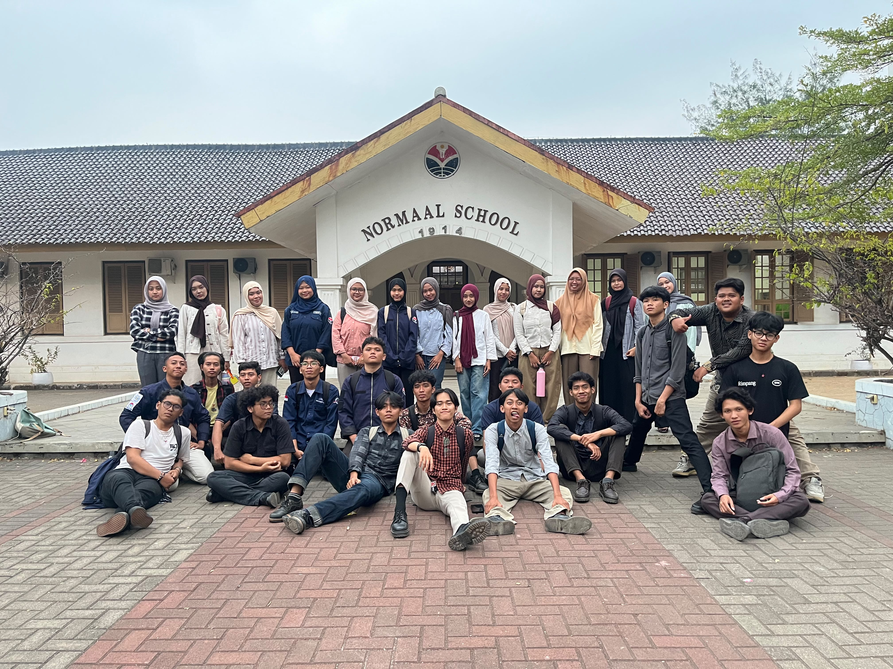

Saya menjadi bagian dari Himpunan Mahasiswa Program Studi Pendidikan Sistem dan Teknologi Informasi khususnya pada Badan legislatif yang mana didalamnya terdapat badan badan lain termasuk Badan legislasi. Badan Legislasi memiliki tugas untuk mengkaji, mengadaakan sidang, mengsahkan Raancangaan Anggaran Belanja dan membuat peraturan himpunan baru dari aspirasi aspirasi yang ada.

Sidang Pleno adalah Agenda Kerja Badan Legislasi yang bertujuan untuk megesahkaan Program kerja dan Agenda kerja selama periode kabinet, serta mengesahkan Rancangan Anggaran Belanja Organisasi Saya bertanggungjawab untuk menjamin peminjaman ruangan, peminjaman barang, menyampaikan persuratan ke lembaga, dan menghubungi ppihak pihak terkait acara.

Sidang Amandemen adalah Agenda Kerja yang menjadi forum untuk seluruh mahasiwa Pendidikan Sistem dan Teknologi Informasi untuk memperbarui peraturan himpunan agar tetap relevan.Saya bertanggungjawab untuk menjamin peminjaman ruangan, peminjaman barang, menyampaikan persuratan ke lembaga, dan menghubungi ppihak pihak terkait acara.

Sosial Projek atau di singkat SOSPRO adalah Program kerja yang beroritentasi pada pengabdian masyarakat, Saya bertanggungjawab untuk menjamin peminjaman ruangan, peminjaman barang, menyampaikan persuratan ke lembaga, dan menghubungi ppihak pihak terkait acara.

MOKA-KU adalah program kerja yang menjadi masa orientasi bagi mahasiwa baru. Saya bertanggungjawab untuk menjamin peminjaman ruangan, peminjaman barang, menyampaikan persuratan ke lembaga, dan menghubungi ppihak pihak terkait acara.

Rotasi adaalah program kerja yang mana mejadi wadah mahasiswa baru beertumbuh dan berkembang. Saya bertanggungjawab untuk mengawas Pelaksana Eksekusi agaar sesuai dengan regulasi yang ada.

Kelas Pelatihan kominfo adalah program pelatihan yang diselenggarakan untuk meningkatkan kemampuan mahasiswa dalam bidang komunikasi dan informasi. Saya bertanggungjawab untuk menjamin peminjaman ruangan, peminjaman barang, menyampaikan persuratan ke lembaga, dan menghubungi ppihak pihak terkait acara.

Eksternal Time adalah program kerja yang menjadi wadah khalayak umum untuk menumbuhkan rasa kepedulian tentang isu yang ada. Pada program kerja ini saya menjadi penanggung jawab dalam mengatur dan menjamin ketersediaan barang setiap divisi.
